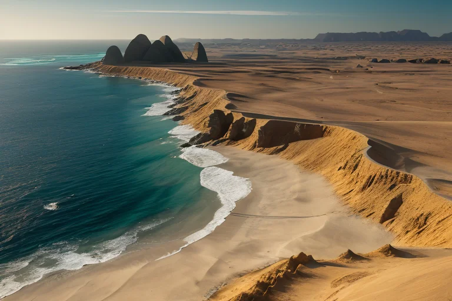
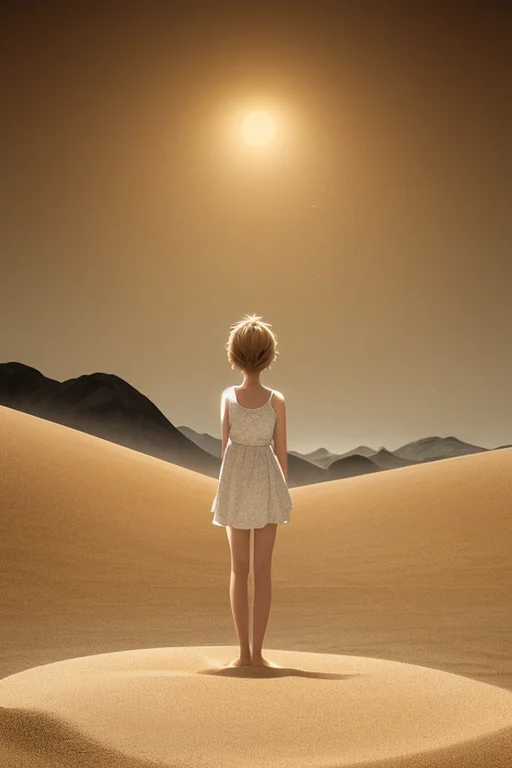
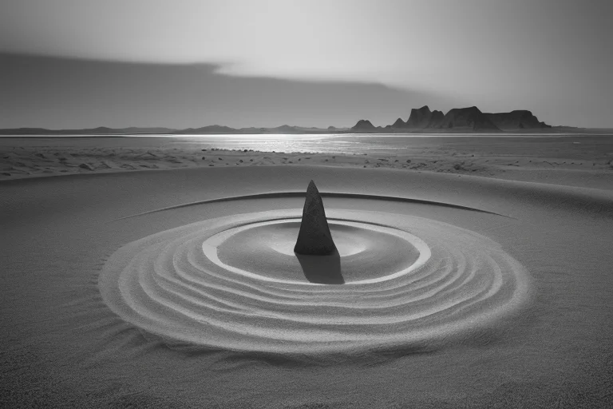
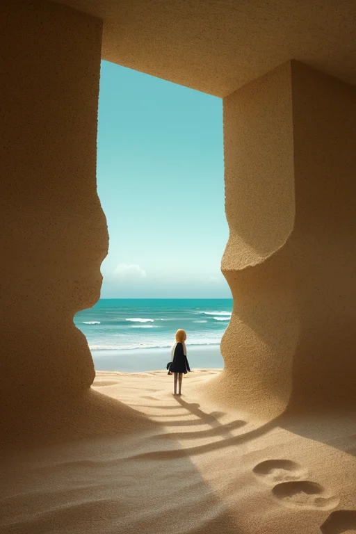
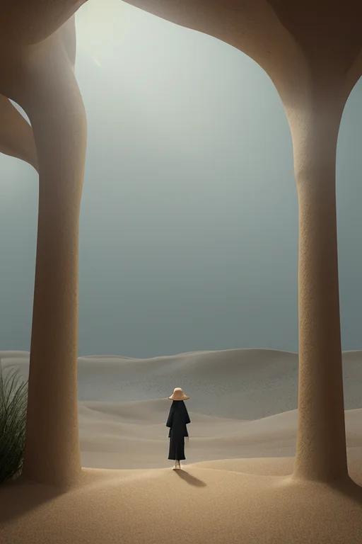

第一章 現実の鳥取
あなたはまだ気づいていない。この土地にも、王がいることを。
日本海の荒波が削り、中国山地がせり出す。その狭間、境界の地が鳥取だ。浦富海岸の奇岩は、波と風という外圧と、地殻という内圧の、果てしない均衡の跡である。内と外の狭間。この土地の本質は、常にその境界線上にある。
砂丘は、海から運ばれ、風に選別された砂が、陸という異界に打ち上げられた、孤独な堆積物だ。そこに立つ者は、海とも山とも違う、第三の質感に包まれる。乾いた風が肌を撫で、足元は絶えず形を変える。二十世紀梨の畑の湿り気ある土壌から、ほんの数キロで、この乾いた世界が広がる。隣り合う異質。それがこの国の日常だ。
孤砂王トットリア・デザートは、砂丘の稜線に立っていた。彼の王国「トットリア・デザート」の世界線は「砂境」――あらゆる境界を司る。彼の仕事は、海風が運ぶ過剰な乾燥波を、妖精デザリアとサキュリアと共に微調整し、背後に広がる農地や町への影響を一段階緩和することだ。感情を持たないはずの王は、この地の「孤高」という質感に、少しずつ染まり始めていた。孤独は、ここでは単なる状態ではない。この土地を形作る、一つの力だった。

第二章 歪みの兆候
砂の美術館の内部は、異国の砂が積み上げられた静謐な空間だった。トットリアは、展示物の影に溶け込み、妖精たちが感知した歪みの波紋を見つめていた。それは、遠くの海で生じた気圧の急変が、乾燥した風としてこの砂境に押し寄せようとする前兆である。通常なら、デザリアが砂丘の稜線を微調整し、サキュリアが風の流れを制御して、その力を分散させる。無駄を削ぎ落とす、彼らに課せられた調整だ。
しかし、今回の波紋には、いつもと違う「雑音」が混じっていた。人の想いのざわめきのようなもの。大山の麓で開かれた大きな祭りの熱気、三朝温泉に集う人々の安堵の息づかい。それらが、土地の感情密度を一時的に高め、世界線の境界を微妙に揺るがしていた。孤独を基調とするこの砂境にとって、外部からの濃密な感情の流入は、それ自体が小さな歪みだった。
トットリアは、砂丘の彼方から吹き上げる風の粒を掌に受け止めた。調整は可能だ。だが、彼はふと思った。このざわめきを「雑音」として除去すべきなのか。それとも――。孤高の王は、初めて「選択」という感情に似た逡巡を覚えた。

第三章 王の葛藤
砂の美術館の彫刻は、その時、微妙に表面の粒子を震わせた。訪れた子供の歓声が、砂の粒子に共鳴し、世界線に小さな波紋を起こしていた。デザリアは即座に乾燥波を調整し、波紋を吸収しようとする。これが常套手段だ。不要な感情の流入は、砂境の安定を乱す雑音でしかない。
しかし、トットリアはデザリアの手を静かに制した。彼は、大山から流れ出る清冽な水が砂に染み込むように、その歓声の「質」を感じ取ろうとした。そこには、浦富海岸の荒波が岩を穿つような、鋭い「喜び」があった。それは、彼の王国が長く疎遠にしてきた感情だ。
除去するのは容易い。だが、除去した先に何が残るのか。完璧な静寂、つまりは以前と変わらぬ孤独だけではないか。彼は、砂丘が風によって形を変え、時に新たな景観を生み出すように、この「雑音」を王国の一部として取り込む「選択」がありうるのではないか、と考え始めていた。
孤高は、確かに王国の礎だった。しかし、礎だけでは、何も生まれはしない。彼は、掌に載せた砂を、そっと握りしめた。

第四章 妖精との対話
砂の美術館の展示室は、静謐に満ちていた。彫刻された砂の城壁は、完璧な孤高の形を保ちながら、微かに崩れかけている。デザリアは、その崩れ際に立っていた。
「王よ。砂は、一粒ではただの粒です。集まって初めて、丘となり、風景となります。しかし、一粒と一粒は決して癒着しません。常に、風という『別れ』の可能性を内包している。それが、砂の本質です」
孤砂王は、浦富海岸の岩肌を想った。波に洗われ、孤絶したその姿は、侵食という絶え間ない「別れ」によって、かえって峻厳な美を獲得していた。
「出会いは、別れの始まりでもある」とデザリアは続けた。「我々が緩和する乾燥も、訪れる人の笑顔も、全ては過ぎ去るもの。それを知りながら手を差し伸べることに、意味があるのでしょうか」
王は答えた。「意味を求めること自体が、無駄かもしれない。ただ、砂丘に足跡が残るように、大山の水が地中を巡るように、過ぎ去ったものは何かを潤し、形を変えて存続する。孤独は、その変化を観測するための、透明な器なのだ」

第五章 微調整と余韻
砂の美術館の展示が、静かに入れ替わった。訪れる人々の波は、砂丘の風のように、来ては去る。王はその流れの脇に立ち、乾燥した空気が人の肌を過度に苛立たせないよう、ほんの少し湿度を調整した。それは、砂が舞い上がるのを最小限に抑えるための、ささやかな配慮でもあった。
浦富海岸の岩場で、足を滑らせそうになった子供を、偶然そばに生えていた草の根が支えた。三朝温泉の湯煙の向こうで、独り旅の老人が、思いがけず昔の知人と再会した。これらは、王が仕組んだものではない。ただ、確率の糸がほんの少し緩んだ結果に過ぎない。孤砂王は、自らの役割を、巨大な砂時計の砂一粒を、ほんのわずか横に弾くような行為だと理解していた。
大山から流れ出る水は、やがて海へ至る。その長い旅路の、ほんの一瞬、ほんの一滴に、王の調整は関わる。孤独は敵でも味方でもない。それは、大山が黙って水を育むように、砂丘が風の形を記録するように、ただそこにある「状態」だった。微調整の余韻は、誰にも気づかれず、二十世紀梨の実の甘さや、松葉がにの味に、ほんの少し宿るかもしれない。
あなたの町にも、王がいる。